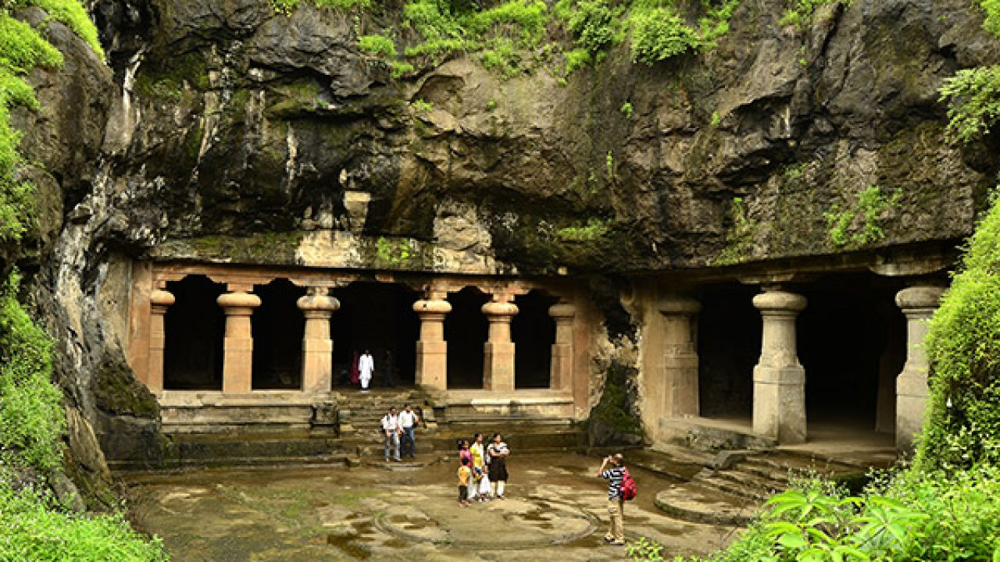

<!DOCTYPE html>
<html lang="en">

<head>
  <meta charset="UTF-8">
  <meta http-equiv="X-UA-Compatible" content="IE=edge">
  <meta name="viewport" content="width=device-width, initial-scale=1.0">
  <title>IndiaTourism</title>
  <style>
    body {
      background-color: #31CC7E;
    }

    header {
      display: flex;
      justify-content: space-around;
    }

    .logo {
      text-decoration: underline;
      text-transform: capitalize;
    }

    .container {
      max-width: 850px;
      padding: 20px;
      margin: auto;
      border-bottom: 1px solid #fff;
    }

    .container h2 {
      margin: 0 0 10px 0;
    }

    .tourism-detail {
      display: flex;
    }

    .tourism-detail img {
      margin-right: 20px;
      width: 346px;
    }
    .scrollable{
      height:320px;
      overflow-y: scroll;
    }
    .menu {
      display: block;
    }

    .menu li {
    display: inline-block;
    padding: 10px;
}

    .menu li a {
      text-decoration: none;
      color: #000;
    }

    .bg-skyblue {
      background-color: rgb(176, 250, 250);
    }

    .bg-grey {
      background-color: #ccc;
    }

    .bg-golden {
      background-color: rgb(248, 81, 15);
    }

    .bg-blue {
      background-color: rgb(226, 155, 202);
    }
    .bg-yellow{
      background-color: rgb(184, 252, 48);
    }
    .bg-limacolor{
      background-color: rgb(248, 91, 91);
    }
    .bg-pink{
      background-color: rgb(167, 28, 74);

    }

    .main {
      overflow: auto;
    }

    footer {
      text-align: center;
    }
  </style>
</head>

<body>

</body>

</html>


<header>
  <h1 class="logo">IndiaTourism</h1>
  <nav >
    <ul class="menu">
      <li><a  href="/html/">Home</a></li>
      <li><a href="/html/">Travel</a></li>
      <li><a href="/html/">Contact Us</a></li>
      <li><a href="/html/">About Us</a></li>
    </ul>
  </nav>
</header>
<div class="main">
  <section>

    <div class="container bg-skyblue">
      <h2>Gateway Of India Mumbai</h2>
      <div class="tourism-detail">
        
        <div class="description">The Gateway of India is an arch monument built during the 20th century in Bombay,
          India.
          The monument was erected to commemorate the landing of King George V and Queen Mary at Apollo Bunder on their
          visit to India in 1911.
          Built in Indo-Saracenic style, the foundation stone for the Gateway of India was laid on 31 March 1911. The
          structure is an arch made of basalt, 26 metres (85 feet) high. The final design of George Wittet was
          sanctioned
          in 1914 and the construction of the monument was completed in 1924. The Gateway was later used as a symbolic
          ceremonial entrance to India for Viceroys and the new Governors of Bombay. It served to allow entry and access
          to India.
          The Gateway of India is located on the waterfront at Apollo Bunder area at the end of Chhatrapati Shivaji Marg
          in South Mumbai and overlooks the Arabian Sea. The monument has also been referred to as the Taj Mahal of
          Mumbai, and is the city’s top tourist attraction.
        </div>
      </div>
    </div>
  </section>
  <section>
    <div class="container bg-golden">
      <h2>Elephanta Caves</h2>
      <div class="tourism-detail">
        
        <div class="description">The Elephanta Caves are located in Western India on Elephanta Island (otherwise known
          as
          the Island of Gharapuri), which features two hillocks separated by a narrow valley. The small island is dotted
          with numerous ancient archaeological remains that are the sole testimonies to its rich cultural past. These
          archaeological remains reveal evidence of occupation from as early as the 2nd century BC. The rock-cut
          Elephanta
          Caves were constructed about the mid-5th to 6th centuries AD. The most important among the caves is the great
          Cave 1, which measures 39 metres from the front entrance to the back. In plan, this cave in the western hill
          closely resembles Dumar Lena cave at Ellora, in India. The main body of the cave, excluding the porticos on
          the
          three open sides and the back aisle, is 27 metres square and is supported by rows of six columns each.
          The 7-metre-high masterpiece “Sadashiva” dominates the entrance to Cave 1. The sculpture represents three
          aspects of Shiva: the Creator, the Preserver, and the Destroyer, identified, respectively, with Aghora or
          Bhairava (left half), Taptapurusha or Mahadeva (central full face), and Vamadeva or Uma (right half).
        </div>
      </div>
    </div>
  </section>
  <section>
    <div class="container bg-grey">
      <h2>Chhatrapati Shivaji Maharaj Vastu Sangrahalaya</h2>
      <div class="tourism-detail  scrollable">
        
        <div class="description">Chhatrapati Shivaji Maharaj Vastu Sangrahalaya, (CSMVS) originally named Prince of
          Wales
          Museum of Western India, is a museum in Mumbai (Bombay) which documents the history of India from prehistoric
          to
          modern times.
          It was founded during British rule of India in the early years of the 20th century by prominent citizens of
          the
          city then called Bombay, with the help of the government, to commemorate the visit of the Prince of Wales
          (later
          George V, king of the United Kingdom and emperor of India). It is located in the heart of South Mumbai near
          the
          Gateway of India. The museum was renamed in 1998 after Chhatrapati Shivaji Maharaj, the founder of the Maratha
          Empire.
          The building is built in the Indo-Saracenic style of architecture, incorporating elements of other styles of
          architecture like the Mughal, Maratha and Jain. The museum building is surrounded by a garden of palm trees
          and
          formal flower beds.
          The museum houses approximately 50,000 exhibits of ancient Indian history as well as objects from foreign
          lands,
          categorised primarily into three sections: Art, Archaeology and Natural History. The museum houses Indus
          Valley
          civilization artefacts, and other relics from ancient India from the time of the Guptas, Mauryas, Chalukyas
          and
          Rashtrakuta.[4]
        </div>
      </div>
    </div>
  </section>
  <section>
    <div class="container bg-blue">
      <h2>Taj Mahal</h2>
      <div class="tourism-detail">
        
        <div class="description">The Taj Mahal is an Islamic ivory-white marble mausoleum on the right bank of the river
          Yamuna in Agra, Uttar Pradesh, India. It was commissioned in 1631 by the fifth Mughal emperor, Shah Jahan to
          house the tomb of his favourite wife, Mumtaz Mahal; it also houses the tomb of Shah Jahan himself. The tomb is
          the centrepiece of a 17-hectare complex, which includes a mosque and a guest house, and is set in formal
          gardens
          bounded on three sides by a crenellated wall.
          Construction of the mausoleum was essentially completed in 1643, but work continued on other phases of the
          project for another 10 years. The Taj Mahal complex is believed to have been completed in its entirety in 1653
          at a cost estimated at the time to be around ₹32 million, which in 2020 would be approximately ₹70 billion.
          The
          construction project employed some 20,000 artisans under the guidance of a board of architects led by Ustad
          Ahmad Lahauri, the emperor’s court architect. Various types of symbolism have been employed in the Taj to
          reflect natural beauty and divinity.
        </div>
      </div>
    </div>
  </section>
                  <section>
                    <div class="container bg-limacolor">
                      <h2>The Beaches Of Goa</h2>
                      <div class="tourism-detail  ">
                        
                        <div class="description">Palolem Beach is largely unspoiled and is inhabited by both local
                          fishermen and by foreign tourists who live in shacks along the shore or in the main village
                          itself.[1] It is about one mile (approximately 1.61 km) long and is crescent-shaped; one can
                          view the entire beach from either end. Both ends of the beach consist of rocks jutting out
                          into the sea. The depth of the sea increases gradually, being shallowest at the northern end
                          of the beach, making it safe for average swimmers, and the currents are not fast.

                          Palolem Beach is situated in Canacona in southern Goa, India. The beach attracts many
                          international tourists, mainly during the winter season between November and March. It is
                          considered to be one of the region's most beautiful beaches.
                        </div>
                      </div>
                    </div>
                  </section>
                  <section>
                    <div class="container bg-pink">
                      <h2>Mehrangarh Fort,Jodhpur</h2>
                      <div class="tourism-detail">
                        
                        <div class="description">Mehrangarh Fort covers an area of 1,200 acres (486 hectares) in
                          Jodhpur, Rajasthan, India. The complex is located on a hilltop around 122 metres above the
                          surrounding plain,[1] and was constructed c. 1459 by Rajput ruler Rao Jodha, though most of
                          the existing structure is from the 17th century. Inside its boundaries there are several
                          palaces known for their intricate carvings and expansive courtyards, as well as a museum
                          housing various relics. A winding road leads to and from the city below. The imprints of the
                          impact of cannonballs fired by attacking armies of Jaipur can still be seen on the second
                          gate. At the north-east of the fort is the chhatri of Kirat Singh Soda, a soldier who fell on
                          the spot defending Mehrangarh.

                          There are seven gates, which include Jai Pol (meaning 'victory gate'), built by Maharaja Man
                          Singh to commemorate his victories over the Jaipur and Bikaner armies in 1806. The Fattehpol
                          (also meaning 'victory gate'), commemorates victory of Maharaja Ajit Singh over the Mughals.

                          Some of the notable festivals taking place here include the World Sacred Spirit Festival and .
                        </div>
                      </div>
                    </div>
                  </section>
                 <section>
                  <div class="container bg-yellow">
                    <h2>The Ganges River</h2>
                    <div class="tourism-detail  scrollable">
                      
                      <div class="description" >The upper phase of the river Ganges begins at the confluence of the
                        Bhagirathi and Alaknanda rivers in the town of Devprayag in the Garhwal division of the Indian
                        state of Uttarakhand. The Bhagirathi is considered to be the source in Hindu culture and
                        mythology, although the Alaknanda is longer, and therefore, hydrologically the source
                        stream.[20][21] The headwaters of the Alakananda are formed by snow melt from peaks such as
                        Nanda Devi, Trisul, and Kamet. The Bhagirathi rises at the foot of Gangotri Glacier, at Gomukh,
                        at an elevation of 4,356 m (14,291 ft) and being mythologically referred to as residing in the
                        matted locks of Shiva; symbolically Tapovan, which is a meadow of ethereal beauty at the feet of
                        Mount Shivling, just 5 km (3.1 mi) away.[22][23] Although many small streams comprise the
                        headwaters of the Ganges, the six longest and their five confluences are considered sacred. The
                        six headstreams are the Alaknanda, Dhauliganga, Nandakini, Pindar, Mandakini and Bhagirathi.
                        Their confluences, known as the Panch Prayag, are all along the Alaknanda. They are, in
                        downstream order, Vishnuprayag, where the Dhauliganga joins the Alaknanda; Nandprayag, where the
                        Nandakini joins; Karnaprayag, where the Pindar joins; Rudraprayag, where the Mandakini joins;
                        and finally, Devprayag, where the Bhagirathi joins the Alaknanda to form the Ganges.[20] After
                        flowing for 256.90 km (159.63 mi)[23] through its narrow Himalayan valley, the Ganges emerges
                        from the mountains at Rishikesh, then debouches onto the Gangetic Plain at the pilgrimage town
                        of Haridwar.[20] At Haridwar, a dam diverts some of its waters into the Ganges Canal, which
                        irrigates the Doab region of Uttar Pradesh, whereas the river, whose course has been roughly
                        southwest until this point, now begins to flow southeast through the plains of northern India.
                        The Ganges river follows a 900 km (560 mi) arching course passing through the cities of Kannauj,
                        Farukhabad, and Kanpur. Along the way it is joined by the Ramganga, which contributes an average
                        annual flow of about 495 m3/s (17,500 cu ft/s) to the river.[24] The Ganges joins the 1,444 km
                        (897 mi) long River Yamuna at the Triveni Sangam at Prayagraj(previously Allahabad), a
                        confluence considered holy in Hinduism. At their confluence the Yamuna is larger than the Ganges
                        contributing about 58.5% of the combined flow,[25] with an average flow of 2,948 m3/s (104,100
                        cu ft/s).
                      </div>
                    </div>
                  </div>
          </section>
        </div>
      </div>
    </div>
  </section>
</div>
</div>
</div>
</section>
</div>
<footer>
  <h1 class="logo">IndiaTourism</h1>
  &copy; Copyright 2023 IndiaTourism
</footer>